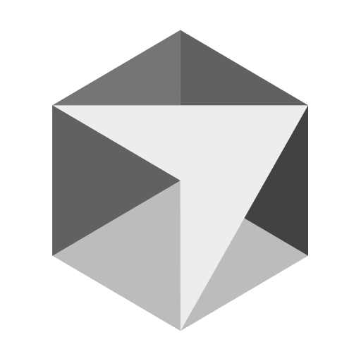
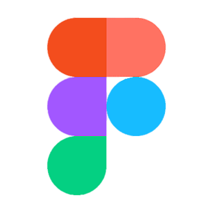
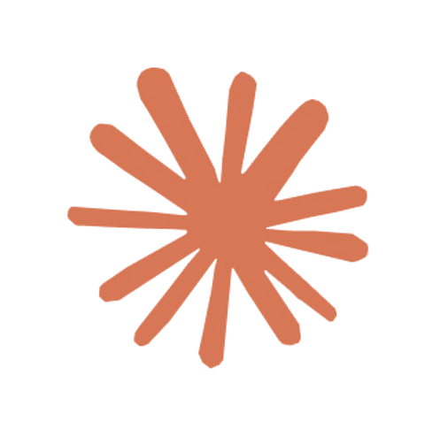

Work
About
Resume
Work
About
Resume
Hi, I'm
Ayo
Check meaning
Ayo
/à.jɔ̀/
noun · Yoruba
Àyọ̀
Joy.
Short for Ayomikun — “my joy is full.”
a product designer building
consumer products
from
0 → 1
, guided by
craft

Cursor

Figma

Claude
, and built for
delight
🤩
View my work
Learn about me